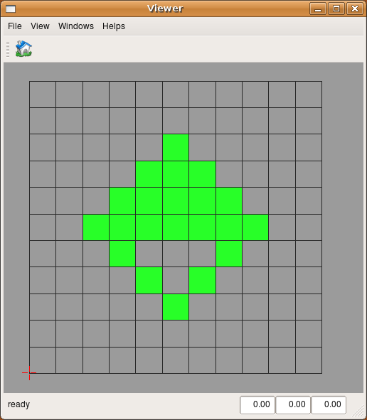

This package use a formal description of a gene expression pattern to project it on a mockup of tissue. Hence, cells that express this gene can be accessed.
Algorithms
Description langage
The description of a gene expression pattern use a formal langage based on abstract geometric shapes.
Once a set of zones are defined, a set of operator allow to express a gene expression zone as a combination of thee zones.
Abstract resolution
Since all abstract shapes are defined according to numerous textual descriptors, a first operation must resolve these descriptors. This is done by passing dictionary associating a textual descriptor with its real description to the resolution method of the abstract shape.
Projection on a mockup
This step transform the formal description of a gene expression pattern into a list of cells that express the gene. Let's assume for example that a tissue is represented by a mesh.
This mesh provides a geometrical representation of the tissue that will be used by a specific algorithm to decide wether a cell is inside an expression pattern.
Simulation
All above operation have been written in
simu.py, the main simulation file. The definition of zones can be modified inside. First launch
create_tissue.py to create a grid tissue the first time.
user@computer:$ python create_tissue.py
then launch
simu.py to display the gene expression pattern.
user@computer:$ python simu.py

Exercices
To go further :
- change the abstract definition of the pattern
- change the information contains inside "d" dictionary
Bugs
If you experience bugs, feel free to report them on
gforge or send a mail to the author. Thanks